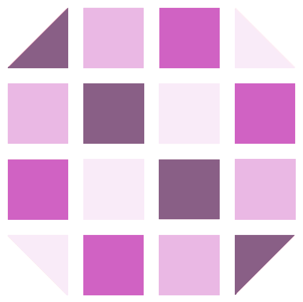

Experimental Designs and Statistical Methods
Basic concepts for data collection planning; appropriate statistical analyses of these data and interpretation of results. Advantages and disadvantages of the various experimental designs.

Instructor
- Dr. Léo Belzile
- 4.850, Côte-Sainte-Catherine
- leo.belzile@hec.ca
Course details
- Fall 2024
- Friday
- 8:30-11:30
- C-Ste-Cath, Caracas
Contacting me
Please use Piazza for any course-related question. For other queries, I am best reached by email.